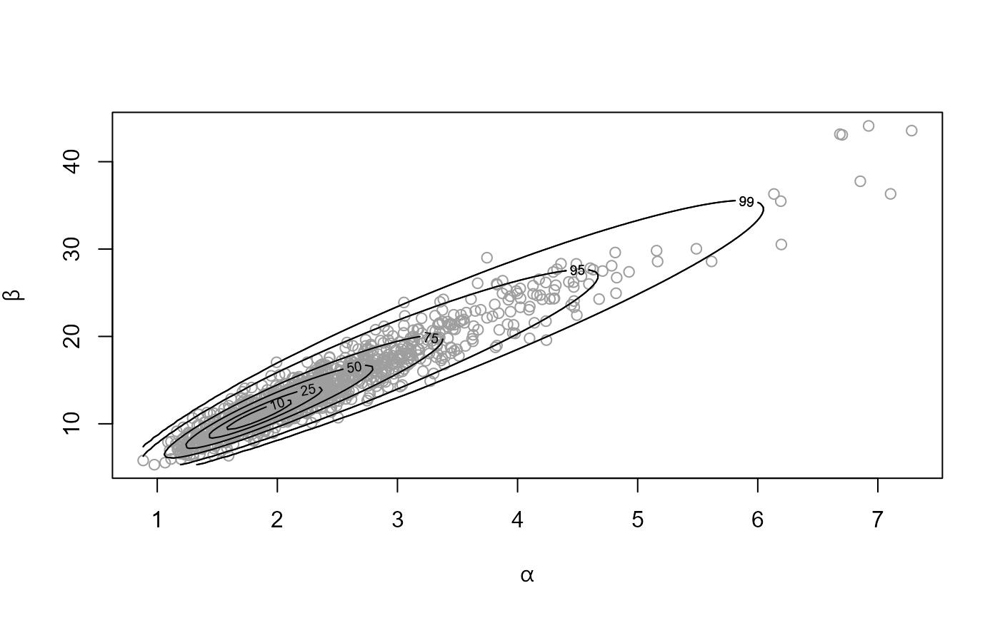
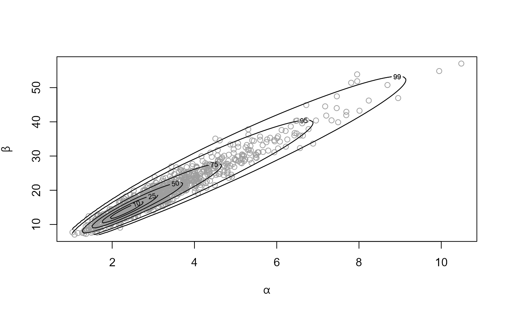
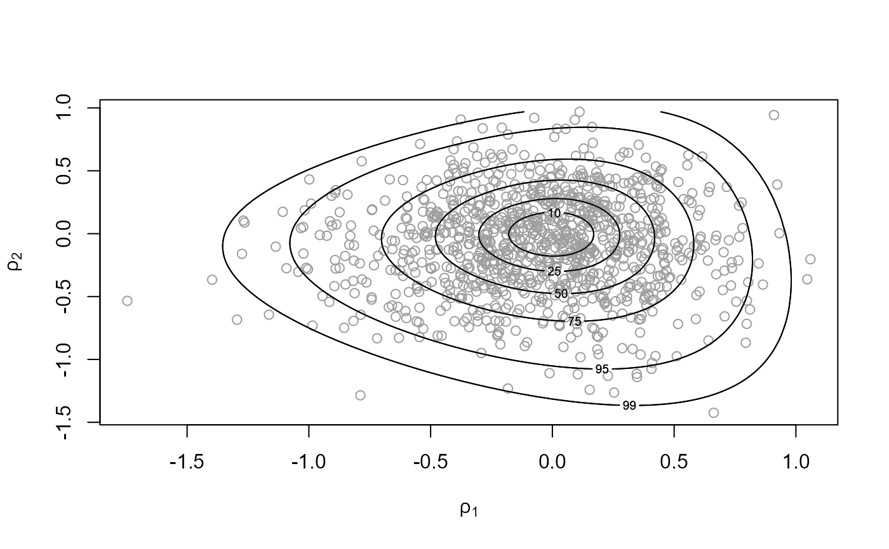

Produces random samples from the posterior distribution of the parameters of certain hierarchical exponential family models.
hef(n = 1000, model = c("beta_binom", "gamma_pois"), data, ..., prior = "default", hpars = NULL, param = c("trans", "original"), init = NULL, nrep = NULL)
Arguments
| n | An integer scalar. The size of the posterior sample required. |
|---|---|
| model | A character string. Abbreviated name for the
response-population distribution combination.
For a hierarchical normal model see |
| data | A numeric matrix. The format depends on |
| ... | Optional further arguments to be passed to
|
| prior | The log-prior for the parameters of the hyperprior
distribution. If the user wishes to specify their own prior then
|
| hpars | A numeric vector. Used to set parameters (if any) in an in-built prior. |
| param | A character scalar.
If |
| init | A numeric vector of length 2. Optional initial estimates for the search for the mode of the posterior density of the hyperparameter vector \(\phi\). |
| nrep | A numeric scalar. If |
Value
An object (list) of class "hef", which has the same
structure as an object of class "ru" returned from ru.
In particular, the columns of the n-row matrix sim_vals
contain the simulated values of \(\phi\).
In addition this list contains the arguments model, data
and prior detailed above, an n by \(J\) matrix
theta_sim_vals: column \(j\) contains the simulated values of
\(\theta\)\(j\) and call: the matched call to hef.
If nrep is not NULL then this list also contains
data_rep, a numerical matrix with nrep columns.
Each column contains a replication of the first column of the original
data data[, 1], simulated from the posterior predictive
distribution.
Details
Conditional on population-specific parameter vectors
\(\theta\)1, ..., \(\theta\)\(J\)
the observed response data \(y\)1, ..., \(y\)J within each
population are modelled as random samples from a distribution in an
exponential family. The population parameters \(\theta\)1, ...,
\(\theta\)\(J\) are modelled as random samples from a common
population distribution, chosen to be conditionally conjugate
to the response distribution, with hyperparameter vector
\(\phi\). Conditionally on
\(\theta\)1, ..., \(\theta\)\(J\), \(y\)1, ..., \(y\)\(J\)
are independent of each other and are independent of \(\phi\).
A hyperprior is placed on \(\phi\). The user can either
choose parameter values of a default hyperprior or specify their own
hyperprior using set_user_prior.
The ru function in the rust
package is used to draw a random sample
from the marginal posterior of the hyperparameter vector \(\phi\).
Then, conditional on these values, population parameters are sampled
directly from the conditional posterior density of
\(\theta\)1, ..., \(\theta\)\(J\) given \(\phi\) and the data.
We outline each model, specify the format of the
data, give the default (log-)priors (up to an additive constant)
and detail the choices of ratio-of-uniforms parameterization
param.
Beta-binomial: For \(j = 1, ..., J\),
\(Yj | pj\) are i.i.d binomial\((nj, pj)\),
where \(pj\) is the probability of success in group \(j\)
and \(nj\) is the number of trials in group \(j\).
\(pj\) are i.i.d. beta\((\alpha, \beta)\), so
and \(\phi = (\alpha, \beta)\).
data is a 2-column matrix: the numbers of successes in column 1
and the corresponding numbers of trials in column 2.
Priors:
prior = "bda" (the default):
\(log \pi(\alpha, \beta) = - 2.5 log(\alpha + \beta),
\alpha > 0, \beta > 0.\) [See Section 5.3 of Gelman et al. (2014).]
prior = "gamma": independent gamma priors on \(\alpha\)
and \(\beta\), i.e.
\(log \pi(\alpha, \beta) =
(s1 - 1)log\alpha - r1 \alpha +
(s2 - 1)log\beta - r2 \beta, \alpha > 0, \beta > 0.\)
where the respective shape (\(s1\), \(s2\)) and rate
(\(r1\), \(r2\)) parameters are specified using
hpars = \((s1, r1, s2, r2)\). The default setting is
hpars = c(1, 0.01, 1, 0.01).
Parameterizations for sampling:
param = "original" is (\(\alpha, \beta\)),
param = "trans" (the default) is
\(\phi1 = logit(\alpha/(\alpha+\beta)) = log(\alpha/\beta),
\phi2 = log(\alpha+\beta)\).
See Section 5.3 of Gelman et al. (2014).
Gamma-Poisson: For \(j = 1, ..., J\),
\(Yj | \lambda\)j are i.i.d Poisson(\(e\)j\(\lambda\)j),
where
\(ej\) is the exposure in group \(j\), based on the
total length of observation time and/or size of the population at
risk of the event of interest and \(\lambda\)j is the mean number
of events per unit of exposure.
\(\lambda\)j are i.i.d. gamma\((\alpha, \beta)\), so
\(\phi = (\alpha, \beta)\).
data is a 2-column matrix: the counts \(yj\) of the numbers of
events in column 1 and the corresponding exposures \(ej\) in column 2.
Priors:
prior = "gamma" (the default): independent gamma priors
on \(\alpha\) and \(\beta\), i.e.
\(log \pi(\alpha, \beta) =
(s1 - 1)log\alpha - r1 \alpha +
(s2 - 1)log\beta - r2 \beta, \alpha > 0, \beta > 0.\)
where the respective shape (\(s1\), \(s2\)) and rate
(\(r1\), \(r2\)) parameters are specified using
hpars = \((s1, r1, s2, r2)\). The default setting is
hpars = c(1, 0.01, 1, 0.01).
Parameterizations for sampling:
param = "original" is (\(\alpha, \beta\)),
param = "trans" (the default) is
\(\phi1 = log(\alpha/\beta), \phi2 = log(\beta).\)
References
Gelman, A., Carlin, J. B., Stern, H. S. Dunson, D. B., Vehtari, A. and Rubin, D. B. (2014) Bayesian Data Analysis. Chapman & Hall / CRC. http://www.stat.columbia.edu/~gelman/book
See also
The ru function in the rust
package for details of the arguments that can be passed to ru via
hef.
hanova1 for hierarchical one-way analysis of
variance (ANOVA).
set_user_prior to set a user-defined prior.
Examples
############################ Beta-binomial ################################# # ------------------------- Rat tumor data ------------------------------- # # Default prior, sampling on (rotated) (log(mean), log(alpha + beta)) scale rat_res <- hef(model = "beta_binom", data = rat) # \donttest{ # Hyperparameters alpha and beta plot(rat_res)#> ru bounding box: #> box vals1 vals2 conv #> a 1.0000000 0.00000000 0.00000000 0 #> b1minus -0.2382163 -0.40313465 -0.03906170 0 #> b2minus -0.2174510 0.05447431 -0.35297539 0 #> b1plus 0.2231876 0.36718411 -0.06551353 0 #> b2plus 0.2512577 0.05665707 0.44459818 0 #> #> estimated probability of acceptance: #> [1] 0.5194805 #> #> sample summary #> alpha beta #> Min. : 0.8536 Min. : 5.064 #> 1st Qu.: 1.7943 1st Qu.:10.800 #> Median : 2.2262 Median :13.646 #> Mean : 2.4495 Mean :14.678 #> 3rd Qu.: 2.8735 3rd Qu.:17.155 #> Max. :13.2346 Max. :76.543# Choose rats with extreme sample probabilities pops <- c(which.min(rat[, 1] / rat[, 2]), which.max(rat[, 1] / rat[, 2])) # Population-specific posterior samples: separate plots plot(rat_res, params = "pop", plot_type = "both", which_pop = pops)# Population-specific posterior samples: one plot plot(rat_res, params = "pop", plot_type = "dens", which_pop = pops, one_plot = TRUE, add_legend = TRUE)# Default prior, sampling on (rotated) (alpha, beta) scale rat_res <- hef(model = "beta_binom", data = rat, param = "original") # \donttest{ plot(rat_res)#> ru bounding box: #> box vals1 vals2 conv #> a 1.0000000 0.00000000 0.0000000 0 #> b1minus -1.0464012 -1.85116847 0.8473716 0 #> b2minus -0.7515215 0.06414713 -1.0929862 0 #> b1plus 1.2453108 2.53614928 1.3267447 0 #> b2plus 1.6246189 0.52814754 3.8051940 0 #> #> estimated probability of acceptance: #> [1] 0.4761905 #> #> sample summary #> alpha beta #> Min. :0.883 Min. : 5.32 #> 1st Qu.:1.761 1st Qu.:10.54 #> Median :2.220 Median :13.36 #> Mean :2.388 Mean :14.27 #> 3rd Qu.:2.799 3rd Qu.:16.83 #> Max. :7.281 Max. :44.10# To produce a plot akin to Figure 5.3 of Gelman et al. (2014) we # (a) Use the same prior for (alpha, beta) # (b) Don't use axis rotation (rotate = FALSE) # (c) Plot on the scale used for ratio-of-uniforms sampling (ru_scale = TRUE) # (d) Note that the mode is relocated to (0, 0) in the plot rat_res <- hef(model = "beta_binom", data = rat, rotate = FALSE) # \donttest{ plot(rat_res, ru_scale = TRUE)# } # This is the estimated location of the posterior mode rat_res$f_mode#> [1] -1.785783 2.741549# User-defined prior, passing parameters # (equivalent to prior = "gamma" with hpars = c(1, 0.01, 1, 0.01)) user_prior <- function(x, hpars) { return(dexp(x[1], hpars[1], log = TRUE) + dexp(x[2], hpars[2], log = TRUE)) } user_prior_fn <- set_user_prior(user_prior, hpars = c(0.01, 0.01)) rat_res <- hef(model = "beta_binom", data = rat, prior = user_prior_fn) # \donttest{ plot(rat_res)#> ru bounding box: #> box vals1 vals2 conv #> a 1.0000000 0.00000000 0.00000000 0 #> b1minus -0.2425978 -0.41087097 -0.04439263 0 #> b2minus -0.2145118 0.05190271 -0.34376799 0 #> b1plus 0.2280150 0.37607515 -0.07085000 0 #> b2plus 0.2730012 0.06004980 0.51162996 0 #> #> estimated probability of acceptance: #> [1] 0.5208333 #> #> sample summary #> alpha beta #> Min. : 1.034 Min. : 7.039 #> 1st Qu.: 2.280 1st Qu.:13.740 #> Median : 2.930 Median :17.441 #> Mean : 3.182 Mean :19.082 #> 3rd Qu.: 3.746 3rd Qu.:22.565 #> Max. :10.487 Max. :57.031############################ Gamma-Poisson ################################# # ------------------------ Pump failure data ------------------------------ # pump_res <- hef(model = "gamma_pois", data = pump) # Hyperparameters alpha and beta # \donttest{ plot(pump_res)summary(pump_res)#> ru bounding box: #> box vals1 vals2 conv #> a 1.0000000 0.00000000 0.00000000 0 #> b1minus -0.5174980 -0.91869101 -0.06060116 0 #> b2minus -0.5150835 0.15757254 -0.92429417 0 #> b1plus 0.4124640 0.65433383 -0.11046433 0 #> b2plus 0.4224941 0.08788857 0.67847965 0 #> #> estimated probability of acceptance: #> [1] 0.5136107 #> #> sample summary #> alpha beta #> Min. :0.2271 Min. :0.2641 #> 1st Qu.:0.8036 1st Qu.:1.2776 #> Median :1.0741 Median :1.9060 #> Mean :1.1493 Mean :2.1830 #> 3rd Qu.:1.4325 3rd Qu.:2.7548 #> Max. :4.8299 Max. :8.7179